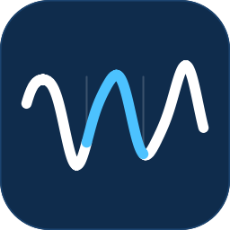
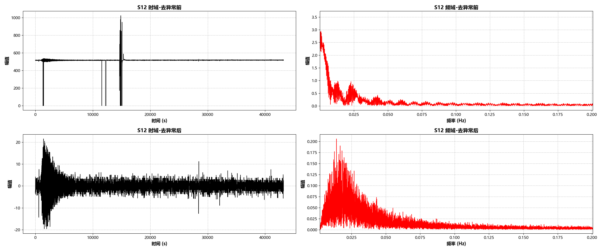
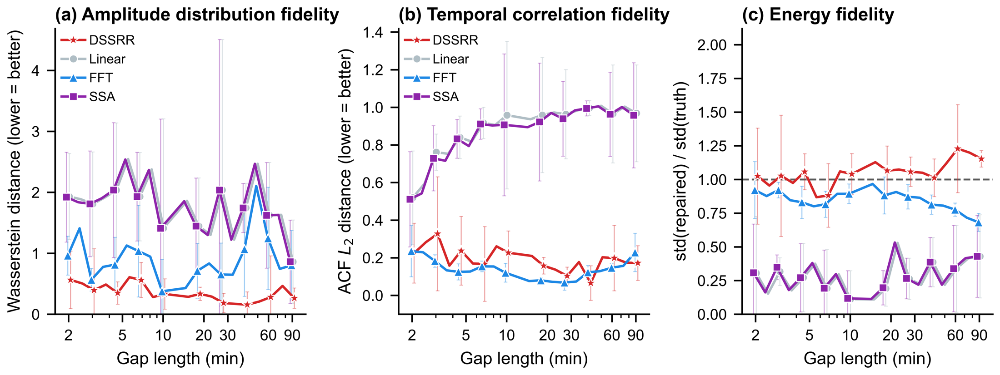
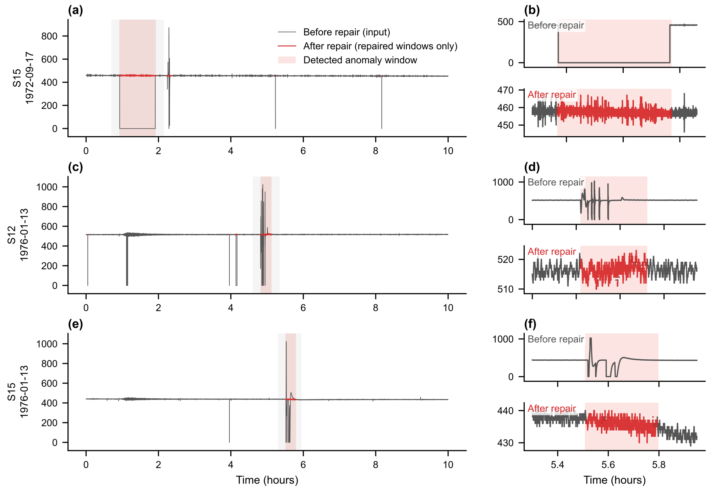
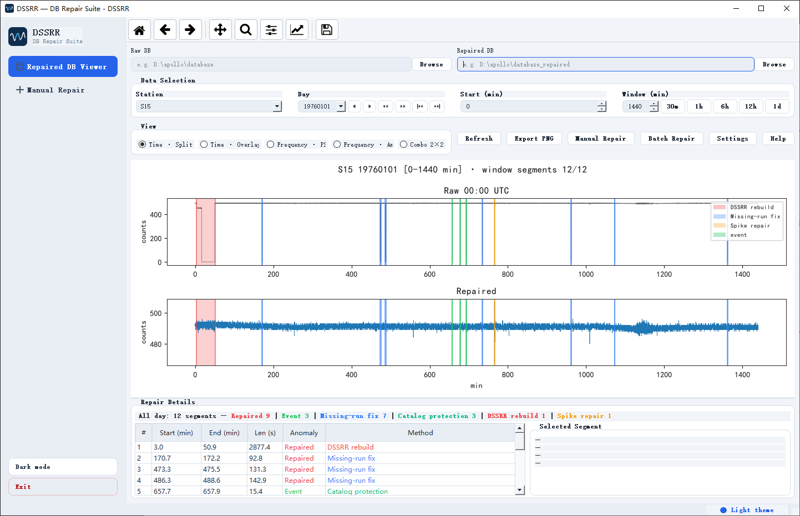
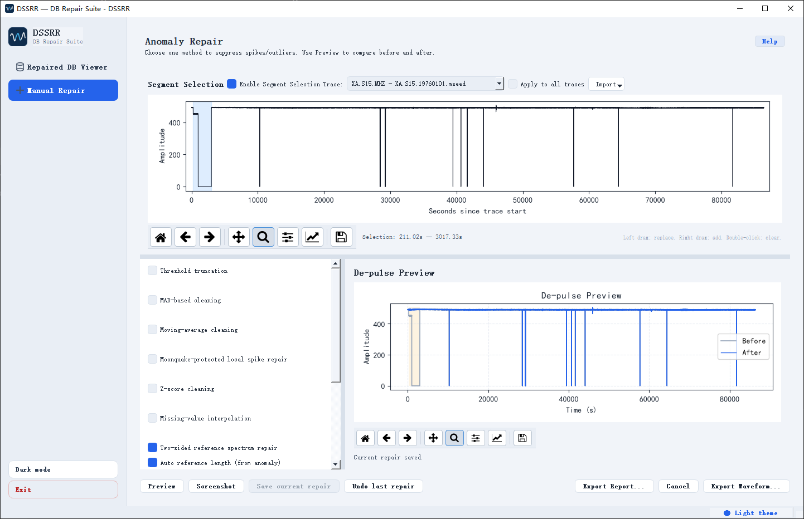
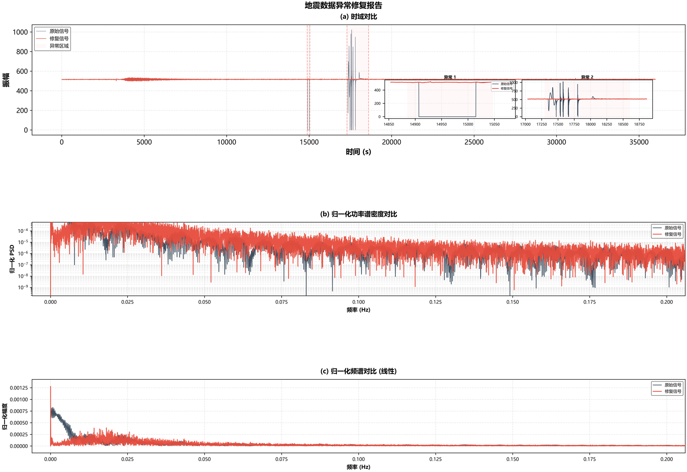

无需训练、不用拟合——只靠缺口两侧的健康数据，把缺失的月震波形补回来。
1969–1977 年，Apollo 月震仪记录了人类第一批月震数据。半个世纪过去，遥测中断造成整段缺失，磁带老化让波形冻结，还有饱和、尖峰、阶跃……短则几秒，长则一个多小时，直接挡住后续的频谱分析、事件检测与震源定位。

几分钟缺口补成一条直线，功率谱直接塌掉，能量分布全毁。
只看一侧数据，那一侧若不平稳，补出的内容就被带偏。
SSA 长缺口下退化；神经网络要训练数据、要拟合权重。
我们要补的不是一条平滑的线，而是一段在频谱、自相关、能量分布上都和真实信号一致的波形纹理。
缺口前后各取一段健康数据，默认长度为缺口一半，限 120–600 秒，留 1 秒安全间隔。
分别估计两侧 PSD，在对数域等权融合，任何一侧都无法"一家独大"。
随机相位参考块重叠相加，再按目标频谱缩放能量，纹理真实。
低频趋势桥接、边界交叉淡化，需要时量化回原始整数网格。
频谱、包络、直流、自相关、能量等诊断指标随数据返回。
硬性保证：缺口之外的每一个样本，原样保留，一个不动。
把缺口从 2 分钟拉到 90 分钟：线性插值、FFT、SSA 的误差随缺口拉长明显恶化，DSSRR（红）始终贴近底部、保持稳定，修复信号与真实信号的能量比一直在 1 附近。

真实 Apollo S12、S15 归档里，冻结、饱和与异常段被自动定位（粉色窗口），修复只在窗内写入，窗外原样保留，修复段与周围纹理自然衔接。

DSSRR 自带 PyQt5 界面（中英双语）。Repaired DB Viewer 把原始库与修复库上下对照，明细表逐条列出每个缺口的类型、时间、方法和长度。

Manual Repair 用鼠标直接拖选异常段，多方法实时预览，修改可撤销、可累计；Batch Repair 自动检测、多级修复、对照月震目录保护真实事件，也可用命令行 dssrr-batch 无人值守运行。

每次修复自动导出三段式报告：时域对比、归一化功率谱、频谱图。

宁可留一个诚实的标记，也不给你一段看似完整、实则虚构的数据。
MIT 协议完全开源，方法论文投稿 Seismological Research Letters，版本已在 Zenodo 归档。
前往 GitHub 试用